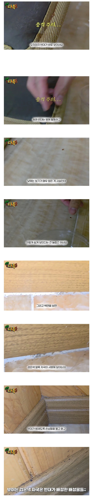
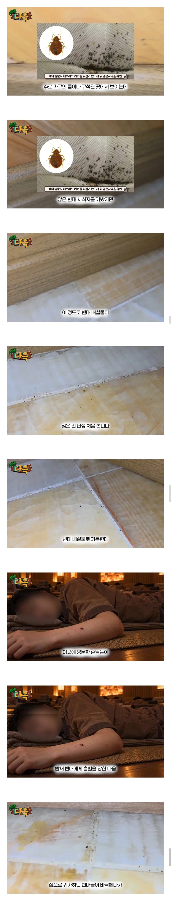
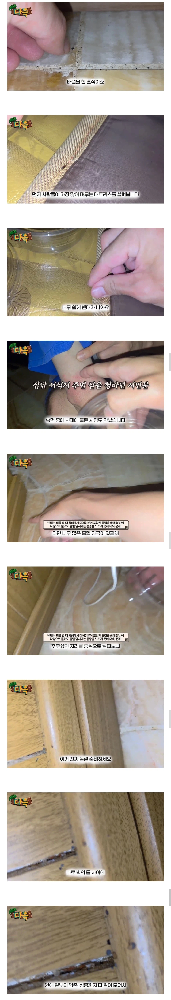
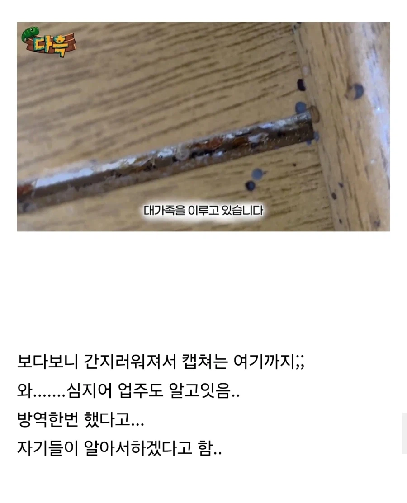
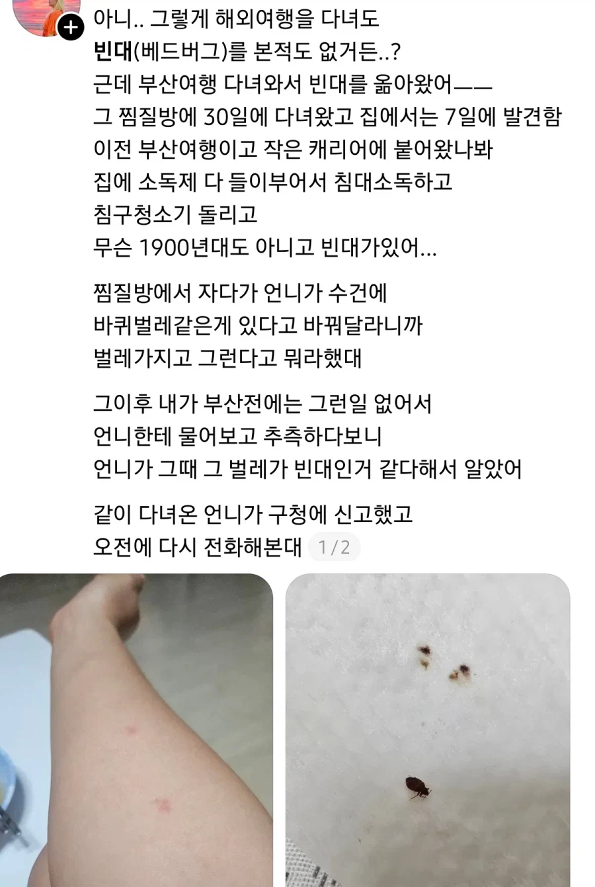

사우나 안간지 20년정도 됨 다른걸 떠나서 솔직히 너무 더러움 내 몸 깨끗하게 하자고 가는게 사우나인데 몇백명이 들어가서 뭔짓을 했는지 알수없는 탕에 들어가는것 자체가 모순인거같음 사우나관계자분들께는 죄송한말이긴한데 더러운건 사실이니까
죄송은 저 사우나 관계자들이 죄송해야지
요즘 사우나 운영하는 사람들 거의 다 엄청늙은 어르신들아님? 지금 사회문제가 어르신들 인식은 후진국수준에서 머물러있어서 옛날처럼 대충대충 해도 된다고 아는 어르신들이 너무 많은것같음 사우나 뿐만이 아니고 그냥 전체적으로
저거 ddt말고 대체할만한 약품이 나왔나 몇년 전 까지만해도 마땅한게 없다고 들었는데
불
시발레벨보소 !
이게 확실하지
빈대 잡으려고 초가삼간 태운다
하지만 빈대는 잡았던 조상님들의 지혜
현대 기준으로 ddt가 살충력이 압도적인건 아님
잔류성이 또라이급인거지
부산에 외국인관광객이 많아지면서 유입된거같다는 추측이 많더라. 지역에 관광객이 많아진다고 무조건 좋아할일이 아님
뭔 외국인 탓을 하고 있어
자연발생하지는 않잖아
ㅋㅋㅋㅋㅋ
그야.. 외국인탓이 맞으니까
지깟게 관광객 많아봐야 부산이지ㅋㅋ
온세상 관광객이 인천으로 들어와서 서울에서 묵는데
왜 빈대는 부산에서 나오냐. 위생관념 ㅈ박은거지
이전에 이슈됐던게 3년전 수도권이다 친구야 ㅋㅋ
뭘 위생관념이 좆박아 거의 절멸수준이다 갑자기 증가하기 시작하면 외국인들 오면서 따라 오는거지
음...설득력이 있군.

무시할수는 없어
역학조사란게 그런거고
인천 인근에 사는데
외국인들 많이 묵는 숙소는 빈대 많이 나온다
저거 집에 옮겨오면 방역 비용만 몇 백은 써야할 거임
침구류 다 버리고
알아서 하겠다(아님)
절멸 불가능
불 지르던가 폭파 시키던가
대 다 흑
쎄스코좀 불러라 ....
옴, 빈대 등
붙는다 라는 표현이 있는 벌레는 이유가 있다
사우나 위생 개나줌 + 외국인 환장의 콜라보
국내에서 빈대 나오는건 거진 해외타고 오는거임 .. 국내토종빈대는 90년대에 거의 절멸했음
음 댓글 전문업체들 봐도 거의 해외관광객이나, 해외가구들이 핵심이구나
세스코… 월요일은 세스코를 사야해
여기 어딘데 북문 거긴가?
빈대의 저 좆같음은 겪어본 사람만이 안다... 진짜 모기보다 1만배는 더 좆같음